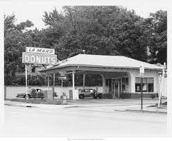

Lamar's in the News
NBC's The Tonight Show host Jay Leno dubbed LaMar's Donuts founder Raymond Lamar the undisputed "King of donuts."
Hallmark Cards designed a greeting card, in the shape of a donut, in Ray Lamar's honor
Food Network featured LaMar's Donuts in the network prime-time series called "Unwrapped."
Previous
Next
History Of Lamar's

The roots of LaMar’s Donuts date back to 1933 when Ray Lamar, 17, began making donuts at the Jack Frost Donuts Company.
During those days, wholesale donuts were made in the morning and the store opened for retail business at 11am and stayed open until midnight. Back then, a dozen donuts cost 18 cents. By the early 1940s, Ray Lamar introduced new flavors, devil’s food donuts, chocolate iced donuts and an apple spice donut to the menu.
Ray Lamar opened the first LaMar’s Donuts in a converted gas station on Linwood Blvd. in Kansas City, Missouri, in 1960. Locals immediately flocked to the homemade donuts and LaMar’s Donuts became a Kansas City institution. Lines started forming before 6 a.m., and by closing time more than 11,000 donuts are sold at this single location.
Based on the donut shop’s phenomenal success and widespread reputation, Ray LaMar and his wife Shannon, made the decision in 1990 to franchise LaMar’s Donuts. Today, we have 24 locations in five states: Arizona, Colorado, Kansas, Missouri, and Nebraska.
Hallmark Cards designed a greeting card in his honor and the Kansas Trivial Pursuit game has a question that reads: “Where do you stand in line for donuts in Kansas City?” Answer: LaMar’s Donuts.
Fun Donut Facts!
The first Friday in June and November 5th are National Doughnut Day.
The most expensive donut costs $100. It's made of edible diamonds, chocolate balsamic vinegar, and other secret ingredients
Over 10 billion donuts are made in the U.S. each year
Between our locations, LaMar’s Donuts produces 344,700 donuts per week, which is 17.9 million donuts per year.
Donuts were orignally called olykoeks, meaning "oily cakes."
The largest donut ever made was an American-style jelly donut weighing 1.7 tons, which was 16 feet in diameter and 16 inches high in the center.